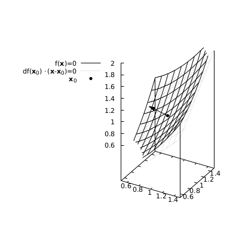
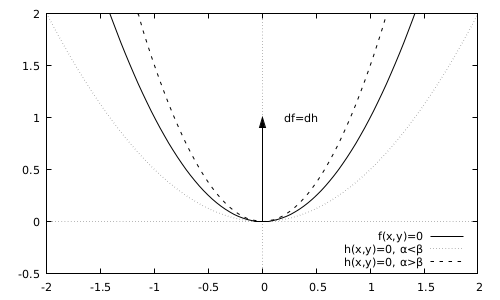
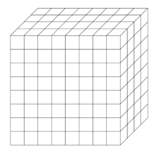

Advanced Calculus for Economics and Finance
Table of Contents
This page collect the errata, additional exercises, and some supplementary material for my book Advanced Calculus for Economics and Finance.
Errata, typos, and clarifications
p.33. Example 2.8. At the end of the first paragraph, add the following. "In fact, the two sets of intervals are the same. Any symmetric interval belongs to \(\mathbb{B}\) and for \(a>b\), \(I_{a,b}=B((a+b)/2,(b-a)/2)\)."
p.35. Example 2.10, replace "and the whole" with ", the empty set, and the whole".
p.38. Proof of Theorem 2.16. In the second sentence of the second paragraph, replace \(x_n \not\in \cup_{j=1}^n W_n\) with \(x_n \not\in \cup_{j=1}^n W_j\).
p.48. Example 2.19, replace "subtopology" with "subspace topology".
p.51. Exercise 2.8, in the definition of \(I(\mathbf{x}, \mathbf{y})\), replace \(\mathbf{y} \mathbf{x}\) with \(\mathbf{x}, \mathbf{y}\).
p.70. there are two missing \(=\) signs in the equation at the bottom of the page, one at the end of the first line and one at the beginning of the second.
p.72. Three rows after the equation. Change the beginning of the sentence "Thus, given…" to "Given…". Before that sentence, add the following sentence: If \(f\) is invertible, \(\rho(\mathbf{x})=\rho(f^{-1}(f(\mathbf{x}))) \leq \|f^{-1}\|_{op} \rho'(f(\mathbf{x}))\), thus \(\rho'(f(\mathbf{x})) \geq \rho(\mathbf{x})/\|f^{-1}\|_{op}\).
p.72. Proof of Theorem 4.6: Replace \(B(y,\epsilon(\mathbf{y}))\) with \(B(\mathbf{y},\epsilon(\mathbf{y}))\) in the third sentence of the second paragraph.
p.74. In the statement of Corollary 4.2 there is a dash between the names "Bolzano" and "Weierstrass".
p.74. In the line before Definition 4.5: remove "open".
p.78. In the statement of Theorem 4.12, last row, replace \(x\) with \(\mathbf{x}\).
p.79. Exercise 4.11: ignore the parenthesis ")" after "Sect. 2.2.2".
p.88. Example 5.4: remove "if we assume that \((f_n)\) is Cauchy," in the second line after the first equation.
p.89 Example 5.4: replace \(d\) with \(d_\infty\) in the equation.
p.92 In the second line after the proof of Lemma 5.1, replace \(00\) with \(0\).
p.106 In the second and third lines of the proof of Theorem 5.18, replace \(0\) with \(\mathbf{0}\).
p.107. Eight line from the bottom of the proof of Theorem 5.19. Replace \(\mathbf{a}_k\) with \(\mathbf{a}_n\).
p.121 In Exercise 5.18, replace "Babilonian" with "Babylonian".
p.139 At the end the proof of Theorem 6.12, add "The proof of the opposite implications is a simple reversal of the previous argument. It is left to the reader as an exercise."
p.152 In Exercise 6.14, add a space before "Hint:".
p.165 In the definition of the function of Example 7.7, replace \((x,y)\) with \((x_1,x_2)\).
p.168 In the definition of the function \(f\) in Example 7.8, replace \(x\) with \(x_1\).
p.170 In the central term of the chain of inequalities composing the third equation from the top, replace the norm \(\| \cdot \|\) with the absolute value \(| \cdot |\).
p.176. In the two Taylor expansions at the top of the page, a factor \(1/2\) is missing in front of the second term containing the Hessian matrix.
p.179. fourth row before the last equation, replace \(V^0\) with \(\text{int} V\)
p.181. In the first row, change the sentence starting with "Since…" to: Since \(A_f(\mathbf{x})\) is invertible, \(\|A_f(\mathbf{x}) \mathbf{h} \| \geq \|\mathbf{h}\|/\|A^{-1}_f(\mathbf{x})\|_{op}\). In the next sentence, replace \(1/\alpha\) with \(\|A^{-1}_f(\mathbf{x})\|_{op}\).
p.185. Toward the end of the proof of Theorem 7.13: replace "the set \(z=z_0\) defined above" with "defined above in the set \(z=z_0\)."
p.186. In the third row from the bottom, replace "\((n+k) \times k\)" with "\(k \times (n+k)\)".
p.187 In the statement of Theorem 7.14, last row, replace \[A_\mathbf{g}=(A_{\mathbf{f},y}(\mathbf{x},\mathbf{g}(\mathbf{x})))^{-1} A_{\mathbf{f},x}(\mathbf{x},\mathbf{g}(\mathbf{x}))\] with \[A_\mathbf{g}=-A_{\mathbf{f},y}(\mathbf{x},\mathbf{g}(\mathbf{x}))^{-1} A_{\mathbf{f},x}(\mathbf{x},\mathbf{g}(\mathbf{x})).\]
p.187 In the second row of the proof of Theorem 7.14, replace the expression \(f(\mathbf{x},\mathbf{y})\) with \(\mathbf{F}(\mathbf{x},\mathbf{y})\). Also, in the fifth row, replace \(\det A_{A_\mathbf{F}}\) with \(\det A_\mathbf{F}\).
p.195 In the statement and proof of Theorem 7.17 (Farka's Lemma) the expression \(\mathbf{a}_j\) is sometimes mistakenly written as \(\mathbf{a_j}\).
p.195 In the fourth row of the proof of Theorem 7.17 (Farka's Lemma), the expression \(\mathbf{a} \cdot \mathbf{y} < 0\) should read \(\mathbf{a} \cdot \mathbf{y} \leq 0\).
p.196 In the second row of the proof of Theorem 7.18 replace \(\mathbf{y} A \mathbf{x}_1=0\) with \(\mathbf{y}^\intercal A \mathbf{x}_1=0\).
p.196 In the equation in the fifth row of the proof of Theorem 7.18 replace the matrix \(B\) with \(C\).
p.196 In the equation at the bottom of the page replace \(b\) with \(\mathbf{b}\).
p.197 In the sixth row of Section 7.7.4, replace \(g_i \in \mathbb{C}^1(D)\) with \(g_i \in C^1(D)\) and in the ninth row \(h_i \in \mathbb{C}^1(D)\) with \(h_i \in C^1(D)\).
p.198 In the third row from the bottom, remove the dash "-" between "Fritz and "John".
p.200 Two rows above the equation in Example 7.22, the expression \(\mathbf{\lambda}^* > 0\) must read \(\mathbf{\lambda}^* > \mathbf{0}\). The zero is in bold, representing a vector of zeros.
p.202 In example 7.24, replace the two instances of \(W_T\) (upper case) with \(w_T\) (lower case). Also remove the first comma in the first equation of the system of first-order conditions.
p.202 In the first row from the top of the page and two rows above the beginning of Section 7.7.5, replace \(T-1\) with \(T\).
p.202 In the last equation replace \(\nabla g_j\) with \(\nabla g_i\).
p.203 In the second row of the proof of Theorem 7.23, replace \(E_H \cup B\) with \(B \cap E_H\).
p.206 Two rows below the proof of Theorem 7.24 replace "matrixx" with "matrix".
p.209 In the statement of Theorem 7.25 and in the first and third equations of the proof replace \(\sum_{i=j}^l\) with \(\sum_{j=1}^l\).
p.216 Last row of the proof of Theorem 8.1, replace \(y \in P'/P\) with \(y \in P' \setminus P\).
p.217 In Example 8.2, after the definition of the function \(f\) add "This function is named after the German mathematician Johann Peter Gustav Lejeune Dirichlet (1805–1859)."
p.218 Third row from the bottom, replace \(f(x) \geq h/n\) with \(\sup f(x) \geq 1/n\) and \(U_f(p_n) \geq s(n)/n^2\) with \(U_f(p_n) \geq 1/n\). Remove ", with \(s_n=n(n+1)/2\).".
p.219 Fifth row from the top, replace \(s_n\) with \(s_n=n(n+1)/2\).
p. 231 In the third row of the proof of Lemma 8.1, replace \(|f(x_1,t_2)-f(x_1,t_2)|< \epsilon\) with \(|f(x_1,t_1)-f(x_2,t_2)|< \epsilon/(b-a)\).
p.245 In the point 3 of Definition 9.1, replace \(\cup_{i=1}^n A_n\) with \(\cup_{i=1}^n A_i\).
p.246 In the fourth line from the bottom, replace "which implies" with "which implies, as longs as \(\mu (A \cap B) < +\infty\),"
p.249 In the Example 9.7, replace \(\bar{\mathcal{A}}=\{\emptyset,A,\{a\},\{b\},\{c\},\{b,c\}\}\) with \(\bar{\mathcal{A}}=2^X\).
p.250 In the fourth and fifth rows from the top, all instances of \(A\) must be replaced with \(A^c\). In the sixth row replace \(\mathbb{R}_{\geq 0}\) with \(\bar{\mathbb{R}}_{\geq 0}\).
p.252 At the end of the first sentence, add "named after the French mathematician Henri Leon Lebesgue (1875-1941)".
p.252 The proof of theorem 9.4 is correct but it can be made simpler with the following modifications. Replace "There exists an integer \(n_j\) and a collection of sets \((C^j_1,\ldots,C^j_{n_j})\) such that \(A_j \subseteq \cup_{i=1}^{n_j} C^j_i\) …" with "There exists a sequence \((C^j_i)\) such that \(A_j \subseteq \cup_{i=1}^\infty C^j_i\) …" Then replace \(n_j\) with \(\infty\) as the upper bound of the summations in the following expressions.
p.253 In the second line before Definitions 9.12, replace \(\neq\) with \(>\).
p.254 Before Definition 9.13, add "using the so-called Carathéodory's criterion, named after the Greek mathematician Constantin Carathéodory (1873-1950)."
p.257 In the sentence before Theorem 9.7 replace "metric" with "measure". In the statement of Theorem 9.7, replace "from a complete metric space \((X,\mathcal{A}_X)\) to a metric space \((Y,\mathcal{A}_Y)\)" with "from a complete measure space \((X,\mathcal{A}_X,\mu_X)\) to a measure space \((Y,\mathcal{A}_Y,\mu_Y)\)". In the third row from the bottom replace "measurable" with "measure".
p.258 In the third row of the statement of Lemma 9.4, replace \(\mathbb{R}_{\geq 0}\) with \(\bar{\mathbb{R}}_{\geq 0}\).
p.260 In Corollary 9.3, replace \((X,\mathcal{A})\) with \((X,\mathcal{A},\mu)\).
p.264 In Example 9.19, replace the first \(x\) in the first equation with \(x \in X\), and in the line below the equation, \(x \in \mathbb{R}\) with \(x \in X\).
p.265 In the proof of Theorem 9.11, after the definition of the set \(E_n\) add "Note that \(E_{n}\) is measurable, \(E_{n} \subseteq E_{n+1}\), and \(\cup_n E_{n}=X\)." In the row below the first equation, replace "so that" with "and, \(\forall A_i\), \(\lim_{n \to \infty} A_i \cup E_n = A_i\), so that".
p.265 In Example 9.20, change the title of the example in "Lebesgue integral of the identity function".
p.266 Before Theorem 9.12 add "The following result is attributed to the French mathematician Pierre Fatou (1878–1929)."
p.267 In the second line of the proof of Theorem 9.13, replace "measurable" with "integrable".
p.272 In the sixth row from the bottom, replace "derivable" with "differentiable".
p.272 In the third row from the bottom, replace \(\phi_\eta(x)= \eta \phi(x/\eta)\) with \(\phi_\eta(x)=\phi(x/\eta)/\eta\).
p.279 In the first line of the proof of Theorem 9.18, replace \(E \subseteq \mathcal{A}_{X \times Y}\) with \(E \in \mathcal{A}_{X \times Y}\).
p.281 In the proof of Theorem 9.1, after the definition of the set \(C\), add: This definition implies that for any element \(E \in C\), \(\forall x \in X\), \(\forall y \in Y\), \(S_x(E)\) and \(S_y(E)\) are measurable sets in the respective \(\sigma\) algebras and that \(h_X^E\) and \(h_Y^E\) are measurable functions in \(\mathcal{A}_X\) and \(\mathcal{A}_Y\), respectively.
p.281 In the proof of Theorem 9.21, before the second equation, replace \(\mu_X(X) \times \mu_X(Y)\) with \(\mu_X(X) \mu_Y(Y) I_{X \times Y}\). In the eight and seventh lines from the bottom, replace \(\mu_Y(A_y)\) with \(\mu_Y(A_Y)\). In the sixth line from the bottom, replace \(\mu_Y(A_X)\) and \(\mu_Y(B_X)\) with \(\mu_X(A_X)\) and \(\mu_X(B_X)\), respectively.
p.282 In the fourth line of Example 9.32, add "with \(\delta_n \in (0,1)\)". In the last line, replace \(\mathbb{N} \times \mathbb{N}\) with \(\{(n,n) \mid n \in \mathbb{N}\}\).
p.284. The "Fubini" theorem should more appropriately be named "Fubini-Tonelli" theorem. Guido Fubini (1879-1943) proved the result for integrable functions while Leonida Tonelli (1885-1946) proved the result for non-negative functions.
p.288 In the last sentence of the proof of Theorem 9.24, products have been mistakenly replaced with sums. The equation should read \(P(\cap_{k=n}^\infty A^C_k)=\prod_{k=n}^\infty P(A^C_k)=\prod_{k=n}^\infty (1-P(A_k)) \leq \exp(-\sum_{k=n}^\infty P(A_k))=0\).
p.294 In the proof of Theorem 9.26. Replace the second sentence with: Because \(\mu_{\mathbf{X}}\) and \(\mu_{X_1\times\ldots\times X_n}\) assign the same measure to all rectangles, they define the same measure on the product \(\sigma\) -algebra \(\mathcal{B}^n\) using the procedure described in Theorem 9.21. However, \(\mathcal{B}^n\) is precisely \(\mathcal{B}_n\) (see the discussion in Example 9.30), and the statement follows.
p.296 In Exercise 9.10 replace "nonnegative measurable" with "nonegative real-valued measurable".
p.297 In Exercise 9.11 replace "nonnegative measurable" with "nonegative real-valued measurable".
p.297 In Exercise 9.12 replace "measurable" with "nonnegative real-valued measurable".
p.307 In the first paragraph of the proof of Theorem B.1, replace \(\bar{B}\) with \(\bar{B}_n\).
Additional Exercises
Preliminaries (Ch. 1)
Exercise With \(A_{1,1}=A_{2,2}=\{0\}\), \(A_{1,2}=\{1\}\), and \(A_{2,1}=\{2\}\), verify that \(\cup_{n=1}^2 \cap _{m=1}^2 A_{n,m} \subseteq \cap_{m=1}^2 \cup_{n=1}^2 A_{n,m}\).
Exercise Prove that for a collection, finite or infinite, of sets with two indices, \(\cup_n \cap _m A_{n,m} \subseteq \cap_m \cup_n A_{n,m}\).
Exercise Consider a function \(f: X \to Y\) and let \(A,B \subseteq X\). Check that \(f(A \cup B)=f(A) \cup f(B)\), \(f(A \cap B)=f(A) \cap f(B)\), if \(A \subseteq B\), \(f(A) \subseteq f(B)\). If the function is bijective, \(f(A^c)=(f(A))^c\) and \(f(A \setminus B)= f(A) \setminus f(B)\).
Exercise Consider a function \(f: X \to Y\) and let \(A,B \subseteq Y\). Check that \(f^{-1}(A \cup B)=f^{-1}(A) \cup f^{-1}(B)\), \(f^{-1}(A \cap B)=f^{-1}(A) \cap f^{-1}(B)\), if \(A \subseteq B\), \(f^{-1}(A) \subseteq f^{-1}(B)\), \(f^{-1}(A^c)=(f^{-1}(A))^c\), \(f^{-1}(A \setminus B)= f^{-1}(A) \setminus f^{-1}(B)\).
Topology (Ch. 2)
Exercise Continuity condition Prove that the function \(f: X \to Y\) between two topological spaces is continuous if and only if \(\forall B \subseteq Y\), \(f^{-1}(\text{int} B) \subseteq \text{int} f^{-1}(B)\).
Exercise Continuity condition Prove that the function \(f: X \to Y\) between two topological spaces is continuous if and only if \(\forall A \subseteq X\), \(f(\bar{A}) \subseteq \overline{f(A)}\).
Exercise Maximum and minimum of semicontinuous functions With reference to Example 2.20, let \(f\) and \(g\) be two functions from a topological space \((X,T)\) to \(\mathbb{R}\). Define \(M(x)=\max \{f(x),g(x)\}\) and \(m(x)=\min \{f(x),g(x)\}\). Prove that if \(f\) and \(g\) are upper (lower) semicontinuous, then \(M\) and \(m\) are upper (lower) semicontinuous. Hint: \(M(x) < z\) if both \(f(x) < z\) and \(g(x) < z\), while \(m(x) < z\) if either \(f(x) < z\) or \(g(x) < z\).
Exercise Subbase Consider a set \(X\) and a collection of subsets \(\mathbb{A}=\{A_\alpha\} \subseteq 2^X\). The number of elements in \(\mathbb{A}\) can be finite or infinite. In general \(\mathbb{A}\) might not be the base of a topology. Now consider all finite intersections of the elements of \(\mathbb{A}\), together with the entire set and the empty set, \(\mathbb{B}=\{ \cap_{i=1}^n A_i \mid A_i \in \mathbb{A}, n\in \mathbb{N} \}\cup X \cup \emptyset\). Prove that \(\mathbb{B}\) is the base of a topology \(T_\mathbb{A}\) on X. The set \(\mathbb{A}\) is said a subbase of the topology \(T_\mathbb{A}\).
Exercise Subbase of the Euclidean topology With reference to the previous exercise, prove that the set \(\mathbb{A}=\{(-\infty,a) \mid a \in \mathbb{R}\} \cup \{(b,+\infty) \mid b \in \mathbb{R}\}\) is a subbase of the Euclidean topology in \(\mathbb{R}\).
Metric Spaces (Ch. 3)
Exercise Dense subsets. Let \((X,d)\) be a metric space, and \(A \subset X\). Prove that \(A\) is dense in \(X\) (Definition 2.2, point 8) if and only if \(\forall x \in X\) and \(\forall \epsilon >0\), \(B(x,\epsilon) \cap A \neq \emptyset\).
Exercise Separable and second-countable Prove that a separable metric space is always second-countable. Hint: Consider the balls with center in the dense set and appropriate radius.
Normed Spaces (Ch. 4)
Exercise Let \(B([0,1])\) be the set of real bounded functions defined over the closed interval \([0,1]\) and \(x_1,x_2 \in [0,1]\). Consider the operator \(h: f \to (f(x_1),f(x_2))\) from \((B([0,1]),\|.\|_\infty)\) to \((\mathbb{R}^2,\|.\|_2)\). Prove that it is a linear operator and compute its norm.
Exercise Let \(B([0,1])\) be the set of real bounded functions defined over the closed interval \([0,1]\) and consider the operator \(h: (a,b) \to a + b x^2\) from \((\mathbb{R}^2,\|.\|_2)\) to \((B([0,1]),\|.\|_\infty)\). Prove that it is a linear operator and compute its norm.
Exercise Discontinuous linear function. Let \((V,\rho)\) be an infinite dimensional normed space and \((\mathbf{e}_n)\) a sequence of linearly independent elements of \(V\) with norm equal to one. Define the function \(F: V \to \mathbb{R}\) as \(F(\mathbf{x})=\sum_{n=1}^\infty n c_n\) if \(\mathbf{x} = \sum_{n=1}^\infty c_n \mathbf{e}_n\) and zero otherwise. That is, the function \(F\) is zero on all elements of \(V\) that do not belong to the subspace spanned by the sequence \((\mathbf{e}_n)\). Prove that the function \(F\) is linear and, according to Definition 4.3, unbounded. Thus, by Theorem 4.6, \(F\) is discontinuous.
Sequences and Series (Ch. 5)
Exercise Consider a converging sequence \(\sum_{n=1}^\infty x_n\) and define \(\tilde{s}_n=\sum_{k=n}^\infty x_k\). Prove that \(\lim_{n \to \infty} \tilde{s}_n=0\). Hint: Use the Cauchy property of the sequence of partial sums.
Exercise With reference to Example 2.20, let \((f_n)\) be a sequence functions from a topological space to \(\mathbb{R}\). Prove that if the functions are upper semicontinuous, then \(m(x)=\inf_n f_n(x)\) is upper semicontinuous, while if they are lower semicontinuous, then \(M(x)=\sup_n f_n(x)\) is lower semicontinuous.
Exercise Limit of monotone sequences of continuous functions. Let \((f_n)\) be a pointwise converging sequence \(f_n \to f\) of continuous functions from a topological space to \(\mathbb{R}\). Prove that if the sequence is nonincreasing, \(f_n(x) \leq f_{n-1}(x)\), then f is upper semicontinuous, while if the sequence is nondecreasing, \(f_n(x) \geq f_{n-1}(x)\), \(f\) is lower semicontinuous. Hint: If the sequence is nonincreasing, \(\left\{x | f(x) < z \right\}\) is equal to \(\cup_n \left\{ x | f_n (x) < z \right\}\), \(\forall z\).
Differential Calculus of Functions of One Variable (Ch. 6)
Exercise Let \(f\) be differentiable in \((a,b)\). Prove that if \(f\) is convex, then \(f'\) is increasing, while if \(f\) is concave, then \(f'\) is decreasing. Hint: Revert the argument in the proof of Theorem 6.12.
Exercise Prove that if two polynomials \(P(x)=\sum_{h=1}^n p_h x^h\) and \(Q(x)=\sum_{h=1}^m q_h x^h\) are equal in an interval \((a,b) \subset \mathbb{R}\), then they are the same polynomial.
Differential Calculus of Functions of Several Variables (Ch. 7)
Exercise Level sets Consider a function \(f: \mathbb{R}^n \to \mathbb{R}\), a real number \(a\), and the associated level set, \(L(a)=\{ \mathbf{x} \in \mathbb{R}^n \mid f(\mathbf{x}) = a \}\), upper level set, \(L(a)^+=\{ \mathbf{x} \in \mathbb{R}^n \mid f(\mathbf{x}) \geq a \}\), and lower level set, \(L(a)^-=\{ \mathbf{x} \in \mathbb{R}^n \mid f(\mathbf{x}) \leq a \}\). Prove that if \(f\) is continuous, \(L(a)\), \(L(a)^+\), and \(L(a)^-\) are closed.
Exercise Inverse function Consider the function \(\mathbf{f}: \mathbb{R}^2 \to \mathbb{R^2}\) defined by
\[ f_1(x_1,x_2)= e^{x_1} \cos x_2,\quad f_2(x_1,x_2)= e^{x_1} \sin x_2. \]
Find the range of \(\mathbf{f}\). Prove that \(d\mathbf{f}(\mathbf{x}) \neq \mathbf{0}\) \(\forall \mathbf{x} \in \mathbb{R}^2\). Thus, a local inverse exists even if the function is not globally one-to-one. Put \(\mathbf{a}=(0,\pi/3)\), \(\mathbf{b}=\mathbf{f}(\mathbf{a})\), and let \(\mathbf{g}\) be the local inverse of \(\mathbf{f}\) around \(\mathbf{a}\). Compute \(d\mathbf{f}(\mathbf{a})\), \(d\mathbf{g}(\mathbf{b})\) and find an explicit formula for \(\mathbf{g}\).
Exercise Inverse function Consider the function \(\mathbf{f}: \mathbb{R}^2 \to \mathbb{R^2}\) defined by
\[ f_1(x_1,x_2)= x_1^2+x_2^2,\quad f_2(x_1,x_2)= x_1+x_2. \]
Find the range of \(\mathbf{f}\). Find for which values of \(\mathbf{x}\) the function admits a local inverse function. Let \(\mathbf{x}\) be such that a local inverse function \(\mathbf{g}\) exists. Study the behavior of \(\mathbf{1}^\intercal d\mathbf{g} \mathbf{1}\) as a function of \(f_1\) and \(f_2\).
Exercise System of equations Show that the system of equations
\[\begin{aligned} 3x+y+z+u^2&=0,\\ x-y+2z+u&=0,\\ 2x+2y-3z+2u&=0, \end{aligned}\]
can be solved for \(x\), \(y\), \(u\) in terms of \(z\); for \(x\), \(z\), \(u\) in terms of \(y\); for \(y\), \(z\), \(u\) in terms of \(x\); but not for \(x\), \(y\), \(z\) in terms of \(u\).
Exercise Local maxima and minima Consider the function \(f: \mathbb{R}^2 \to \mathbb{R}\) defined by
\[ f(x,y)=2x^3-3x^2+2y^3+3y^2. \]
Find its critical points in \(\mathbb{R}^2\). Show that \(f\) has exactly one local maximum and one local minimum in \(\mathbb{R}^2\). Are these extremal points strict?
Exercise Implicit function Consider the function \(f: \mathbb{R}^2 \to \mathbb{R}\) defined by
\[ f(x,y)=2x^3-3x^2+2y^3+3y^2. \]
Let \(S \subseteq \mathbb{R}^2\) be the set of points for which \(f(x,y) =0\). Find the points in \(S\) in which this equation can be solved for \(x\) in terms of \(y\) and those in which it can be solved for \(y\) in terms of \(x\).
Integral Calculus (Ch. 8)
Before Exercise 8.1
Exercise Let \(f\) be integrable on the closed interval \([a,b]\). Prove that \(\int_{-b}^{-a} dx f(-x)=\int_{a}^{b} dx f(x)\). Hint: Consider the lower and upper sums.
Exercise Symmetric integrals of odd and even functions. Let \(f\) be integrable in the closed symmetric interval \([-a,a]\) and \(n \in \mathbb{N}\). Prove that if \(f\) is even (odd), then \(\int_{-a}^{a} dx x^n f(x)=0\) if \(n\) is odd (even) and \(\int_{-a}^{a} dx x^n f(x)= 2 \int_{0}^{a} dx x^n f(x)\) if \(n\) is even (odd).
Before Exercise 8.6
Exercise Integral of uniformly convergent sequences. Let \((f_n)\) be a sequence of continuous functions defined on \([a,b]\) converging uniformly to \(f\) (see Definition 5.19). Prove that \(\lim_{n \to \infty } \int_a^b d x f_n(x) = \int_a^b d x f(x)\).
Exercise Mean value theorem for the integral. Consider a closed interval \([a,b]\) and a function \(f \in C^0([a,b])\). Then, there exists at least one point \(x_0 \in [a,b]\) such that \(f(x_0) (b-a) = \int_a^b d x f(x)\). Hint: Remember that continuous functions map connected sets into connected sets, Theorem 2.25.
Measure Theory (Ch. 9)
After Exercise 9.8:
Exercise Consider the outer measure \(\mu^*\) defined starting from the sets in Definition 9.11. Prove that \(\mu^*([a,b])=\mu^*((a,b))=\mu^*([a,b))=\alpha(b)-\alpha(a)\), and that, for any singlet \(\{a\}\), \(\mu^*(\{a\})=0\).
Exercise Shows with an example that if the function \(\alpha\) in Definition 9.11 is not right continuous, then there might be two sets \(A\) and \(A'\) such that \(\mu^*(A \cup A') > \mu^*(A) + \mu^*(A')\).
After Exercise 9.9:
Exercise Monotone functions are measurable. Prove that any monotone function from \((\mathbb{R},\mathcal{B})\) to \((\mathbb{R},\mathcal{B})\) is measurable. Hint: Find the preimage of the sets \((-\infty,a]\), \(a \in \mathbb{R}\).
Exercise With reference to the example below, prove that the point-mass measures of Example 9.4 are Baire functions.
Exercise Prove that a real-valued measurable function is simple if and only if it takes a finite number of values.
After Exercise 9.22:
Exercise Imagine to flip three fair coin. Set \(S_0=0\) and, after each flip, set \(S_t=S_{t-1}+1\) if head is realized or \(S_t=S_{t-1}-1\) if tail is realized. Consider the sequence of events \(A_1=\{S_1=1\}\), \(A_2=\{S_2=0\}\), and \(A_3=\{S_3>0\}\). Show that they are serially independent but not pairwise independent. Hint: Groups all eight outcomes of flipping three coins in sequence.
Additional Material
Preliminaries (Ch. 1)
In p.1, after the first period
The distributive property for unions and intersections implies that \((A \cap B) \cup C = ( A \cap B) \cup (A \cap C)\) and \((A \cup B) \cap C = ( A \cap C) \cup (B \cap C)\). In general, the order in which unions or intersections are performed matters (see the Exercises at the end of the chapter).
With \(A \setminus B\) we denote the elements of \(A\) that do not belong to \(B\), so that \((A \cap B) \cap (A \setminus B) =\emptyset\) and \(A = (A \cap B) \cup (A \setminus B)\). According to the De Morgan's laws, named after the British mathematician Augustus De Morgan (1806–1871), \((A \cap B) \setminus C = (A \setminus C) \cup (B \setminus C)\) and \((A \cup B) \setminus C = (A \setminus C) \cap (B \setminus C)\).
Around p.7.
Lemma The countable union of a countable number of sets, \(A = \cup_{i=1}^\infty \cup_{j=1}^\infty A_{i,j}\), is a countable union of sets, \(A=\cup_{i=1}^\infty A'_i\).
Proof Imagine to stack the countable sets one below the other. In each row, arrange the elements of a set in increasing fashion, using the order relation induced by their one-to-one map with the natural numbers. Then follow the counting procedure illustrated in the proof of Theorem 1.6 to build a one-to-one relationship with \(\mathbb{N}\).
Around p.20, after Corollary 1.1
Example Weighted Kolmogorov mean Consider a strictly monotone function \(f: \mathbb{D} \subseteq \mathbb{R} \to \mathbb{D} \subseteq \mathbb{R}\) with \(\mathbb{D}\) convex, that is an interval, an half-line or the whole \(\mathbb{R}\), a set of points \(\mathbf{x}=(x_i,\ldots,x_n) \subset \mathbb{D}\) and a set of positive weights \(\mathbf{w}=(w_1,\ldots,w_n)\). The assumptions guarantee that \(f\) is invertible. The generalized mean, taking its name from the Russian mathematician Andrej Komogorov (1903-1987), is defined as
\[ K_f(\mathbf{x},\mathbf{w}) = f^{-1} \left( \frac{\sum_{i=1}^n w_i f(x_i)}{\sum_{i=1}^n w_i} \right). \]
If \(\mathbb{D} = \mathbb{R}_{\geq 0}\) and \(f(x)=1/x\), this definition corresponds to the harmonic mean of Exercise 1.11, while if \(\mathbb{D} = \mathbb{R}_{\geq 0}\) and \(f(x)=x^z\) with \(z>0\), it corresponds to the power mean of Example 1.6.
We can easily generalize the result of Example 1.6. Consider two functions \(f\) and \(g\) that satisfy the previous requirements on a domain \(\mathbb{D}\). Then if \(f\) is increasing and \(f \circ g^{-1}\) is a concave function, or , in other terms, if \(f\) is a concave transformation of \(g\), \(\forall \mathbf{x} \subset \mathbb{D}\) and \(\forall \mathbf{w}\), \(K_g(\mathbf{x},\mathbf{w}) \leq K_f(\mathbf{x},\mathbf{w})\). To see it, simply notice that, by assumption, using the Jensen inequality (Corollary 1.1),
\[ f(K_g) = f \circ g^{-1} \left( \frac{\sum_{i=1}^n w_i g(x_i)}{\sum_{i=1}^n w_i} \right) \leq \frac{\sum_{i=1}^n w_i f(x_i)}{\sum_{i=1}^n w_i}. \]
Applying \(f^{-1}\) to both sides proves the result. The analysis for decreasing functions, convex transformations, and the additional benefits of requiring strict concavity or convexity for \(f \circ g^{-1}\), is left as an exercise to the reader.
Topology (Ch. 2)
At the bottom of p.42, before "Using this notions…" add the following sentence: \(T_Y\) is said the subspace topology or relative topology induced by the topology \(T\) on the subset \(Y\).
At the end of Section 2.2.1
Definition (Separable space)
A space is separable if it contains a countable dense subset.
Note that a second-countable space is always separable. A dense subset can be constructed by taking one element in each element of a countable base. As the next example shows, the opposite is not true.
Example (Lower limit topology is not second-countable)
Consider the topology \(T_l\) generated by the intervals \(\{[a,b) \mid a,b \in \mathbb{R}\}\) on the set of real numbers. This is the lower limit topology (see Exercise 2.11), also known as Sorgenfrey topology after the American mathematician Robert Henry Sorgenfrey (1915–1996). It is immediate to see that the set \(\mathbb{Q}\) is dense in \(\mathbb{R}\) under \(T_l\).
Let \(\mathbb{B}\) be a base of \(T_l\). We will show that it is not countable. For each \(x \in \mathbb{R}\), consider the set \([x,x+1)\). This is an open set, thus it can be written as the union of elements of \(\mathbb{B}\). One of these elements, \(B_x\), contains \(x\) and, as \(B_x \in [x,+\infty)\), \(x=\min B_x\). If \(x \neq y\), then \(B_x \neq B_y\), as \(x \not\in B_y\). Thus, the collection of different sets \(\{B_x \mid x \in \mathbb{R} \}\) must belong to \(\mathbb{B}\), and they are more than countable (see Example 1.2).
Theorem (Countable subsets of bases) In a second-countable space \((X,T)\), any base \(\mathbb{B}\) admits a countable subset \(\mathbb{B}' \subseteq \mathbb{B}\) that is still a base.
Proof Let \(\mathbb{C}\) be a countable base and define the set \[ I=\{(C_1,C_2) \mid \exists B \in \mathbb{B}, C_1 \subseteq B \subseteq C_2\} \subset \mathbb{C} \times \mathbb{C} \]
The ordered pairs of \(I\) are countable. Build a countable subset \(\mathbb{B}' \subseteq \mathbb{B}\) by picking, for each pair \((C_1,C_2)\), an element \(B_{(C_1,C_2)} \in \mathbb{B}\). Using Theorem 2.4 we will prove that this is a base. For any \(x \in A \in T\), as \(\mathbb{C}\) is a base, \(\exists C_2\) such that \(x \in C_2 \subseteq A\). Because \(\mathbb{B}\) is a base, \(\exists B \in \mathbb{B}\) such that \(x \in B \subseteq C_2 \subseteq A\). But also \(\exists C_1\) such that \(x \in C_1 \subseteq B \subseteq C_2 \subseteq A\). Replace the selected \(B\) with \(B_{(C_1,c_2)}\) to prove the assertion.
Around p.31, after Example 2.7
Example (Nested topologies induced by order relations)
Consider a complete preorder relation (see Section 1.2) on a space \(X\). For any \(x \in X\), define \(L'(x)=\{y \mid y \prec x \}=U(\{x\})^c\). Note that \(\forall x,y\), \(L'(x) \cap L'(y)\) is equal to either \(L'(y)\), if \(x \succeq y\), or \(L'(x)\), if \(y \succeq x\). Thus, by Theorem 2.6, the collection of subsets \(\mathbb{B}_\succ=\{L'(x) \mid x \in X\}\) is the base of a nested topology \(T_{\succ}\) on \(X\).
Analogously, the nested topology \(T_{\prec}\) can be built from the base \(\mathbb{B}_\prec=\{U'(x) \mid x \in X\}\), with \(U'(x)=\{y \mid x \prec y \}=L(\{x\})^c\).
Around p. 49, after Example 2.20.
Example (Preference relations and utility on second-countable topological spaces)
Consider a complete preorder relation (see Section 1.2) on a topological space \((X,T)\). In economics, this often indicates a preference relation. A function \(u: X \to \mathbb{R}\) such that \(u(x) \geq u(y)\) if and only if \(x \succeq y\) is said to be a utility function. When it exists, the utility function represents a convenient tool for describing the preference relation. We can easily construct a utility representation for a wide range of preferences.
Assume that the topology \(T\) is second countable (Definition 2.6) and, \(\forall x \in X\), the set of upper bounds \(U(\{x\})\) is closed, with respect to the Euclidean topology in \(\mathbb{R}\). Note that this is equivalent to saying that the set \(L'(x)=\{y \in y \prec x \}\) is open, as, for the assumed completeness of the preorder relation, \(L'(x)=U(x)^c\). Let \(\{B_1,B_2,\ldots,B_n,\ldots\}\) be a (countable) base of the topology so that, by definition, \(\forall x \in X\), \(\exists N(x) \subseteq \mathbb{N}\), \(L'(x)=\cup_{n \in N(x)} B_n\). Define the function \[ u(x) = \sum_{n \in N(x)} \frac{1}{2^n}. \] The function \(u(x)\) has image in \([0,1]\). If \(x \succeq y\), then \(L'(y) \subseteq L'(x)\) and \(N(y) \subseteq N(x)\). Thus \(u(x) \geq u(y)\). If \(x \succ y\), \(u(x) > u(y)\), as \(L'(y) \subset L'(x)\). In this case the inclusion is strict because \(y \in L'(x)\) but \(y \not\in L'(y)\).
Conversely, if \(u(x) \geq u(y)\), then it must be \(x \succeq y\), because otherwise \(u(x) < u(y)\). Thus, \(u(x)\) represents a utility function. Note that for any interval \([0,a)\), \[ u^{-1}([0,a)) = \cup_{u(x) \leq a} L'(x), \] which, being the union of open sets, is open. We can conclude that \(u\) is upper semicontinuous (see Example 2.20).
If we assume that \(T\) is second-countable and, \(\forall x \in X\), the set of lower bounds \(L(\{x\})\) is closed, using a similar argument, we can see that a lower semicontinuous utility function exists. These results were firs derived by the American economist Trout Rader in 1963.
Clearly, assuming a second-countable \(T\) and the closeness of both \(U(\{x\})\) and \(L(\{x\})\), one gets a utility function which is upper and lower semicontinuous, thus continuous. This is the most famous result derived by the French economist Gerard Debreu in his 1959 essay.
Series and Sequences (Ch. 5)
After theorem 5.3.
We can easily prove that also the inverse is true in first-countable topologies. Footnote: The following statement can be extended to any topological space if instead of using sequences we used the more general notion of net. Nets are not particularly difficult mathematical objects, but they rest outside the limited scope of this textbook.
Theorem In a first-countable topological space, if any converging sequence has one limit, then the space is Hausdorff.
Proof We show that if the space is not Hausdorff, then there is a converging sequence with two limits. Assume that the space is not Hausdorff and let \(x,y \in X\), \(x \neq y\), be such that they do not have disjoint neighborhoods. Since the space is first-countable, there exists a countable base \(\{B_n(x)\}\) of the neighborhoods of \(x\) and a countable base \(\{B_n(y)\}\) of the neighborhoods of \(y\). Consider the decreasing bases \(\{B'_n(x)\}\) and \(\{B'_n(y)\}\) defined as \(B'_n(x)=\cap_{i=1}^n B_i(x)\) and \(B'_n(y)=\cap_{i=1}^n B_i(y)\). Note that if \(n \leq m\) than \(B'_m (x) \subseteq B'_n(x)\) and \(B'_m(y) \subseteq B'_n(y)\). Because \(x\) and \(y\) do not have disjoint neighborhoods, \(B'_n(x) \cap B'_n(y) \neq \emptyset\). Let \(x_n \in B'_n(x) \cap B'_n(y)\). The sequence \((x_n)\) converges to both \(x\) and \(y\). To see it, note that \(\forall N(x)\) and \(\forall N(y)\), \(\exists B_n(x) \subseteq N(x)\) and \(\exists B_m(x) \subseteq N(y)\). Let \(k =\max\{n,m\}\). Then, \(\forall h >k\), \(x_h \in B'_k(x) \subseteq N(x)\) and \(B'_k(x) \subseteq N(y)\).
Example (Banach space of bounded function) This is an alternative version of Example 5.4. Consider the space \(B(A)\) introduced in Example 3.3. We will prove that this space is complete under the uniform norm of Example 4.3.
Consider a Cauchy sequence \((f_n)\) of elements of \(B(A)\). This means that \(\forall \epsilon >0\), \(\exists n_\epsilon\) such that if \(n,m>n_\epsilon\), \[ \sup_a \{|f_n(a)-f_m(a)|\} < \epsilon. \]
Thus \(\forall a\in A\), the sequence \((f_n(a))\) is a Cauchy sequence of real numbers and , according to Corollary 5.1, it is convergent. Define \(f^*(a)=\lim_{n \to \infty} f_n(a)\). In fact, this convergence is uniform. Because the distance induced by the norm is a continuous function (see the discussion after Theorem 3.1), \(\forall a\) and \(\forall n>n_\epsilon\), \[ \lim_{m \to \infty} |f_n(a)-f_m(a)| = |f_n(a)-\lim_{m \to \infty} f_m(a)|= |f_n(a) -f^*(a)| < \epsilon. \]
The inequality is valid also if the take the supremum on all \(a\), thus \(\| f_n-f^* \|_\infty \to 0\). It remains to show that \(f^* \in B(A)\). Fix \(\epsilon>0\) and consider an \(n\) such that \(\forall a\), \(|f^*(a)-f_n(a)|<\epsilon\). Thus, \(|f^*(a)|<|f_n(a)|+\epsilon\), but since this is true for all \(a\), \(\|f^*\|_\infty \leq \|f_n\|_\infty + \epsilon\), so that \(f^*\) is bounded.
Example (Banach space of bounded sequences) Let \(p \geq 1\). Consider a real sequence \((x_n)\) and, with some abuse of notation (see Sect. 4.2.2) define \(\| (x_n) \|_p = ( \sum_{n=1}^\infty |x_n|^p)^{1/p}\). Let \(l_p\) be the set of all bounded sequences, \(l_p=\{ (x_n) \mid \| (x_n) \|_p < +\infty\}\). The set of sequences is a linear space under the natural operation \((x_n) + (y_n) = (x_n + y_n)\) and \(a (x_n) = (a x_n)\), \(\forall a \in \mathbb{R}\). The zero element is the constant sequence zero, \((0)\). Applying the Minknowski inequality (Theorem 4.5) to any truncated sequence and taking the limit, it is easy to see that \(\| (x_n) + (y_n) \|_p \leq \| (x_n) \|_p + \| (y_n) \|_p\). This implies that the set \(l_p\) is closed with respect to the addition of its elements, and that \((l_p, \| . \|_p )\) is a normed space. The associated metric space \((l_p,d_p )\) is defined through the distance function \(d_p((x_n), (y_n))= \|(x_n) - (y_n)\|_p\). We want to prove that this space is complete.
Let \((x_n)^m\) be a Cauchy sequence in \(m\) of elements of \(l_p\). That is, \(\forall \epsilon>0\), \(\exists m_\epsilon\) such that, \(\forall m,l > m_\epsilon\),
\[ d_p((x_n)^m, (x_n)^l) = \|(x_n)^m - (x_n)^l\|_p = \left( \sum_{n=1}^\infty |x_n^m-x_n^l|^p \right)^{1/p} < \epsilon. \]
This implies that \(\forall n\), \((x_n^m)\) is a Cauchy, and hence converging, sequence in \(m\). Let \(x^*_n=\lim_{m \to \infty} x_n^m\). For the continuity of the distance function, if \(m> m_\epsilon\),
\[ \lim_{l \to \infty} d_p((x_n)^m, (x_n)^l)= d_p((x_n)^m, \lim_{l \to \infty} (x_n)^l) = d_p((x_n)^m, (x_n^*)) \leq \epsilon. \]
This implies that \(\lim_{m \to \infty} d_p((x_n)^m, (x_n^*))=0\). That is, the sequence \((x_n)^m\) of elements of \(l_p\) converges to \((x_n^*)\) in the distance \(d_p\). It remains to show that \((x_n^*) \in l_p\). By the triangular inequality, \(\forall m\), \[ d_p((x_n^*),(0)) \leq d_p((x_n^*),(x_n)^m)+ d_p((x_n)^m,(0)). \] Fix \(\epsilon>0\) and pick an \(m\) such that \(d_p((x_n^*),(x_n)^m)<\epsilon\). As \((x_n)^m \in l_p\), \(\exists M>0\) such that \(d_p((x_n)^m,(0))=\| (x_n)^m \|_p < M\). Thus \(d_p((x_n^*),(0)) = \| (x_n^*)\|_p < M+\epsilon\).
After Theorem 5.20.
Example Banach space and series Consider a normed space \((V,\rho)\). We can prove that this space is complete (see Definition 5.7), thus a Banach space, if and only if the series \(\sum_{n=1}^{\infty} \mathbf{x}_n\) converges when \(\sum_{n=1}^\infty \rho(\mathbf{x}_n) < +\infty\).
First, assume that the space is Banach. If the series of the norms converges, by Theorem 5.2, \(\forall \epsilon >0\), \(\exists n_\epsilon \in \mathbb{N}\) such that \(\forall n,n' > n_\epsilon\), \(\sum_{k=n}^{n'} \rho(\mathbf{x}_k) <\epsilon\). Define the partial sum \(\mathbf{s}_n=\sum_{k=1}^n \mathbf{x}_k\). Then, by the triangular inequality, \(\rho(\mathbf{s}_{n'}-\mathbf{s}_n) \leq \sum_{k=n}^{n'} \rho(\mathbf{x}_k) <\epsilon\), which implies that \((\mathbf{s}_n)\) is a Chauchy sequence and, thus, converging.
Second, assume that the convergence of the series of norms implies the convergence of the series. Consider a Cauchy sequence \((\mathbf{x}_n)\). By the Cauchy property, \(\lim_{n \to \infty} \rho(\mathbf{x}_{n+1}-\mathbf{x}_n)=0\). Then we can build a subsequence \((\mathbf{x}'_n)\) such that \(\rho(\mathbf{x}'_{n+1}-\mathbf{x}'_n)<1/2^n\). Using the summation of the geometric series, \(\sum_{n=1}^\infty \rho(\mathbf{x}'_{n+1}-\mathbf{x}'_n) < 1\). Thus, by hypothesis, the series \(\sum_{n=1}^\infty \mathbf{x}'_{n+1}-\mathbf{x}'_n\) converges to some element \(\mathbf{x}\). However, for the partial sums, \(\sum_{k=1}^n \mathbf{x}'_{k+1}-\mathbf{x}'_k = \mathbf{x}'_{n+1}-\mathbf{x}'_1\). Thus, \(\mathbf{x}'_{n} \to \mathbf{x}'_1+\mathbf{x}\). Having a convergent subsequence, by Theorem 5.6, the sequence \((\mathbf{x}_n)\) is convergent.
Differential Calculus of Functions of Several Variables (Ch. 7)
At the end of section 7.4

Figure 1: Level set \(f(\mathbf{x})=x_3-x_1^2/2-x_2^2/2=0\) and its tangent plane \(x_1+x_2-x_3-1=0\) in \(\mathbf{x}_0=(1,1,-1)\). The direction of the gradient of \(f\) in \(\mathbf{x}_0\) is also shown
Example (Level set, tangent hyperplane, and differential) Consider a function \(f:E \subseteq \mathbb{R}^n \to \mathbb{R}\), \(f \in C^1(E)\) and has the second-order partial derivatives, \(\mathbf{x}_0 \in \text{int} E\), and \(df(\mathbf{x}_0) \neq\mathbf{0}\). We are interested in the level set of the function \(f\) through \(\mathbf{x}_0\), that is the locus of points \(L=\{ \mathbf{x} \in \mathbb{R}^n \mid f(\mathbf{x}) = f(\mathbf{x}_0) \}\) (this set will be more thoroughly discussed in Section~7.6). Using the Taylor polynomial,
\[ f(\mathbf{x})=f(\mathbf{x}_0)+df(\mathbf{x}_0) \cdot (\mathbf{x}-\mathbf{x}_0) + o(\| \mathbf{x}-\mathbf{x}_0 \|). \]
Thus, in a sufficiently small neighborhood of \(\mathbf{x}_0\), the set \(L\) is well approximated by the hyperplane
\[ df(\mathbf{x}_0) \cdot (\mathbf{x}-\mathbf{x}_0)= \sum_{i=1}^m \partial_i f(\mathbf{x}_0) (x_i-x_{0 i})=0. \]
This hyperplane is a line if \(n=2\) and a plane if \(n=3\). Locally, it has a single point in common with the set \(L\), namely \(\mathbf{x}_0\). Hence, it can be considered the tangent hyperplane to \(L\). It is generated by all the vectors in \(\mathbb{R}^n\) orthogonal to \(df(\mathbf{x}_0)\). In this sense we can say that the differential \(df(\mathbf{x}_0)\) is orthogonal to the level set of the function \(f\) passing through \(\mathbf{x}_0\). See the example in the picture above.
After Theorem 7.23, on page 204.

Figure 2: Example of second-order conditions
Example (Second-order conditions) We want to maximize the function \(f(x,y)=y-\beta x^2\) with the equality constraint \(h(x,y)=y-\alpha x^2=0\). The origin of the axis \(\mathbf{0}=(0,0)\) is a candidate solution with multiplier \(\mu=1\), \(df(\mathbf{0})=dh(\mathbf{0})=(0,1)\). The value of the function in this point is zero. The second-order conditions derived in Theorem 7.23 suggest to investigate the expression \(\mathbf{u}^\intercal H_L \mathbf{u}\), where
\[ H_L = H_f-H_h= \begin{pmatrix} 2(\alpha-\beta) &0 \\ 0 &0 \end{pmatrix}, \]
for the nonzero vectors orthogonal to the constraints in \(\mathbf{0}\), that is the vectors of the type \(\mathbf{u}=(u,0)\), \(u \in \mathbb{R} \setminus \{0\}\). Thus we have to study the quantity \(2 u^2 (\alpha-\beta)\). If \(\alpha>\beta\) this quantity is strictly positive, suggesting that the candidate solution cannot be a maximum. In this case (see the picture above) the curve \(h(\mathbf{x})=0\) passes above the contour line \(f(\mathbf{x})=0\), that is the locus of points in which the value of the function \(f\) is zero, so that, along the curve \(h(\mathbf{x})=0\), the function \(f\) takes positive values in any neighborhood of the origin. If instead \(\alpha<\beta\), than the curve \(h(\mathbf{x})=0\) passes through a region of the domain in which the function is negative, or zero in \(\mathbf{0}\). In this case, the condition is sufficient to guarantee that the candidate solution is a strict local maximum. Finally, if \(\alpha=\beta\), than the value of the function is zero when restricted to the points \(\mathbf{x}\) such that \(h(\mathbf{x})=0\). In this case the candidate solution is a local maximum, but not a strict maximum.
Integral Calculus (Ch. 8)
After Example 8.4
The next example investigates a formally different, but equivalent, definition of integral.
Example (Alternative definition of the Riemann integral) Given a partition \(P\) of the interval \([a,b]\) define the mesh of the partition as \(m(P)=\max_{i}(x_i-x_{i-1})\). In some textbooks, the integral of the bounded function \(f\) defined on \([a,b]\) is said to exist if and only if there exists a sequence of partitions \((P_n)\) such that \(\lim_{n \to \infty} m(P_n) = 0\) for which \(\lim_{n \to \infty} U_f(P_n)-L_f(P_n) = 0\). We want to prove that this definition is equivalent to the one previously discussed. As already noticed, if any sequence of partitions \((P_n)\) exists such that \(\lim_{n \to \infty} U_f(P_n)-L_f(P_n) = 0\), then the function is integrable. Here we prove the opposite implication.
Suppose that \(f\) is integrable on \([a,b]\) and define \(\Delta=\sup_{[a,b]}f-\inf_{[a,b]}f\). Then, \(\forall \epsilon >0\), there exists a partition \(P_\epsilon=\{x_0,\ldots,x_{n(\epsilon)}\}\) such that \(U_f(P_n)-L_f(P_n) < \epsilon/2\). Now consider any sequence of partitions \((P_n)\) such that \(\lim_{n \to \infty} m(P_n) = 0\). There exists an index \(k\) such that \(\forall n >k\), \(m(P_n)<\delta=\epsilon/(2 \Delta n(\epsilon))\). Take any partition of the sequence with \(n>k\) and assume it has \(n_i\) intervals \(I_i\), that is, \(n_i+1\) points. Split these intervals into \(n(\epsilon)\) groups. If for some \(j=1,\ldots,n(\epsilon)\), \(I_i \subseteq [x_{j-1},x_j]\), then \(i \in A_j\). If instead some point of \(P_\epsilon\) is internal to \(I_i\), \(i \in B\). The groups \(\{A_1,\ldots,A_{n(\epsilon)},B\}\) are disjoint. The number of elements of \(B\) is not greater than \(n(\epsilon)\). By definition, \[ U_f(P_n)-L_f(P_n) = \sum_{j=1}^{n(\epsilon)} \sum_{i \in A_j} \delta (\sup_{I_i} f - \inf_{I_i} f) + \sum_{i \in B} \delta (\sup_{I_i} f - \inf_{I_i} f). \] Note that \(\forall i \in A_j\), as \(I_i \subseteq [x_{j-1},x_j]\), \[ \sup_{I_i} f - \inf_{I_i} f \leq \sup_{[x_{j-1},x_j]} f - \inf_{[x_{j-1},x_j]} f. \] Also, \(\sum_{i \in A_j} \delta \leq x_j-x_{j-i}\) as we are summing the lengths of intervals inside \([x_{j-1},x_j]\). At the same time, \(\forall i \in B\), \(\sup_{I_i} f - \inf_{I_i} f<\Delta\). Thus,
\begin{multline*} U_f(P_n)-L_f(P_n) \leq \sum_{j=1}^{n(\epsilon)} (x_j-x_{j-i}) \left(\sup_{[x_{j-1},x_j]} f - \inf_{[x_{j-1},x_j]} f \right)\\ + \sum_{i \in B} \delta (\sup_{I_i} f - \inf_{I_i} f) \leq U_f(P_\epsilon)-L_f(P_\epsilon) + n(\epsilon) \Delta \delta < \epsilon. \end{multline*}After Corollary 8.3
As the next example shows, monotonicity is a strong property when integration is concerned.
Example (Pointwise converging sequence of monotone functions) Let \((f_n)\) be a sequence of monotone real valued functions, all increasing or all decreasing, defined on \([a,b]\). Assume that the sequence is pointwise converging to a function \(f\), that is \(\forall x \in [a,b]\), \(f_n(x) \to f(x)\). It is immediate to see that \(f\) must be itself monotone. Thus, by Theorem 8.7, \(\forall n\), \(f_n \in \mathcal{R}([a,b])\), and \(f \in \mathcal{R}([a,b])\). We can actually prove that \[ \lim_{n \to \infty } \int_a^b d x f_n(x) = \int_a^b d x \lim_{n \to \infty } f_n(x). \] Assume for definiteness that the functions are all increasing. Consider \(\forall \epsilon>0\) and let \(P=\{x_0=a,x_1,\ldots,x_{N-1},x_N=b\}\) be a partition of the interval \([a,b]\). Then, \[ \left| U_P(f) - U_P(f_n)\right| \leq \sum_{i=1}^N (x_{i}-x_{i-1}) |f(x_i)-f_n(x_i)|, \] and \[ \left| L_P(f) - L_P(f_n)\right| \leq \sum_{i=1}^N (x_{i}-x_{i-1}) |f(x_{i-1})-f_n(x_{i-1})|, \] where we have used the monotonic behaviour of the functions. Because the sequence of functions is monotonically convergent, \(\exists n_P\) such that \(\forall n> n_P\), \(\forall i\), \(|f(x_i)-f_n(x_i)|< \epsilon/(2(b-a))\). Then, substituting in the previous equation, \(\forall n > n_P\), \(\left| U_P(f) - U_P(f_n)\right|< \epsilon/2\) and \(\left| L_P(f) - L_P(f_n)\right|< \epsilon/2\). This implies that definitely in \(n\), \(L_P(f)-\epsilon/2 < \int_a^b d x f_n(x) < U_P(f)+\epsilon/2\). Note that the index \(n_P\) will generally depends on the partition \(P\). However, as \(f \in \mathcal{R}([a,b])\), there exists a partition \(P\) for which \(U_{P}(f)-L_{P}(f)<\epsilon/2\), thus, \(\forall n > n_{P}\), \(\left|\int_a^b d x f(x) - \int_a^b d x f_n(x)\right| < \epsilon\), which proves the assertion.
This result differs from the more powerful monotone convergence, Theorem 9.11, and dominated converge, Theorem 9.14, available when considering Lebesgue integrals. In fact, the latter do not assume that the functions in the sequence are all monotone, albeit Theorem 9.11 requires the convergence itself being monotone. Similar results for the Riemann integral are not generally available for continuous functions. In general, we have to assume that the sequence of functions converges uniformly (see the Exercise above)
Measure Theory (Ch. 9)
After Theorem 9.2. A third useful property of the measure is how it interacts with nested sequences of sets.
Theorem If \((A_n)\) is a nondecreasing nested sequence of measurable sets, \(A_n \subseteq A_{n+1}\), \(\forall n\), \(\lim_{n \to \infty} \mu(A_n) = \mu( \cup_{n=1}^\infty A_n )\). Analogously, if \((B_n)\) is a nonincreasing nested sequence of measurable sets, \(B_{n+1} \subseteq B_{n}\), \(\forall n\), and \(\mu(B_1) < +\infty\), \(\lim_{n \to \infty} \mu(B_n) = \mu(\cap_{n=1}^\infty B_n)\).
Proof First, note that, by assumption, the sequence \((\mu(A_n))\) is monotone nondecreasing. If it is unbounded, the statement is trivial. If it is bounded from above, it has a limit. Note also that \(\cup_{n=1}^\infty A_n=\cup_{n=1}^\infty (A_n\setminus A_{n-1})\) and, for different \(n\), the sets \(A_n\setminus A_{n-1}\) are disjoint. Thus, for the additive property of the measure,
\begin{multline*} \mu(\cup_{n=1}^\infty A_n)=\mu( \cup_{n=1}^\infty (A_n\setminus A_{n-1}) ) = \sum_{n=1}^\infty \mu ( A_n\setminus A_{n-1} )=\\ \lim_{n \to \infty} \sum_{k=1}^n \mu ( A_k\setminus A_{k-1} )= \lim_{n \to \infty} \mu ( \cup_{k=1}^n A_k\setminus A_{k-1} )= \lim_{n \to \infty} \mu ( A_n). \end{multline*}To prove the second part of the statement, consider a finite measure set \(C\) that contains all the sets of the sequence, \(B_1 \subseteq C\). Define the sequence \((C_n = C \setminus B_n)\). This is a nondecreasing nested sequence of sets, so that, according to the first statement of the theorem, \(\lim_{n \to \infty} \mu(C_n) = \mu( \cup_{n=1}^\infty C_n )\). But \(\mu(C_n) = \mu(C)-\mu(B_n)\) and \(\mu( \cup_{n=1}^\infty C_n )=\mu(C \setminus \cap_{n=1}^\infty B_n )= \mu(C)-\mu(\cap_{n=1}^\infty B_n)\), whence the assertion.
In the previous theorem, \(\cup_{k=1}^n A_k = A_n\) and \(\cap_{k=1}^n B_k = B_n\). Thus, with some abuse of notation, when considering nested sequences, one can move the limit inside the measure, and write \(\lim_{n \to \infty} \mu(A_n) = \mu( \lim_{n \to \infty} A_n )\) or \(\lim_{n \to \infty} \mu(B_n) = \mu( \lim_{n \to \infty} B_n )\). When considering decreasing sequences, attention must be put on the fact that we are dealing with finite measure sets.
After Corollary 9.3.
Example It is easy to see that Corollary 9.3 might fail if \((X,\mathcal{A},\mu)\) is not complete. Let \(N\) be a null set and \(N \not\in \mathcal{A}\). Let \(f(x)=1\) if \(x \in N\) and \(f(x)=0\) otherwise. The sequence \((f_n)\) of constant, and hence measurable, functions \(f_n(x)=0\), \(\forall x \in X\), converges a.e. to \(f\) but the latter is not measurable.
After Example 9.15
Example Baire functions Consider the set of real-valued functions on a topological space \((X,T)\) to \(\mathbb{R}\) equipped with the Euclidean topology. Build a subset \(\mathit{F}\) according to the following two rules: if \(f\) is continuous then \(f \in \mathit{F}\) and if there exists a sequence \((f_n)\), \(f_n \in \mathit{F}\) such that \(f_n \to f\) pointwise, then \(f \in \mathit{F}\). The set \(F\) is made of all continuous functions, all pointwise limits of continuous functions, all pointwise limits of pointwise limits of continuous functions, and so on. The functions belonging to \(\mathit{F}\) are called Baire functions after the French mathematician René-Louis Baire (1874 – 1932). By Corollary 9.2 and Theorem 9.9 we know that all Baire functions are measurable on \((X,\sigma(T))\). By Theorem 9.3, when \(X=\mathbb{R}\) and \(T\) is the Euclidean topology, they are Lebesgue measurable. Examples of noncontinuous Baire functions are the point-mass measure on \(\mathbb{R}\) (see Example 9.4 and the exercises of this chapter), the Dirichelet function (see Examples 8.2 and 9.15) and the Thomae's function (see Examples 8.4 and 9.23).
Replace the proof of Theorem 9.16 with the following
Proof Because \(f\) is Riemann integrable in \([a,b]\), according to Definition 8.3, there exists a sequence of partitions \((P_n)\) such that \[ \lim_{n\to\infty} U(P_n)-L(P_n) = \lim_{n\to\infty} \int dl \; \left( s_{P_n}^U(x)-s_{P_n}^L(x) \right) =0. \]
The functions \(s_{P_n}^U-s_{P_n}^L\) are all bounded above by the integrable simple function \((\sup_{[a,b]} f - \inf_{[a,b]} f)I_{[a,b]}\). Thus, by dominated convergence (Theorem 9.14), we can pass the limit inside the integral and, remembering Theorem 9.10, conclude that a.e. \(\lim_{n\to\infty} s_{P_n}^U(x)-s_{P_n}^L(x)=0\). Let \(A=\{x \in [a,b] \mid \lim_{n\to\infty} s_{P_n}^U(x)-s_{P_n}^L (x)=0\}\) and \(A'=[a,b]\cap A^c\). Because the Lebesgue measure is complete, \(A\) is measurable and \(l(A')=0\).
Let \(A_0=\{x \in [a,b] \mid x \in \cup_{n=1}^\infty \cap_{k=n}^\infty P_n\}\) be the set of points that are definitely in the partitions \(P_n\). This set is at most countable, thus, it is a Lebsgue null set. If \(x \in A \setminus A_0\), \(\forall \epsilon>0\), there exists a partition \(P_n\) and \(x_{i-1},x_i \in P_n\) such that \(s_{P_n}^U(x)-s_{P_n}^L (x) < \epsilon\) and \(x \in (x_{i-1},x_i)\). Because \(\sup_{[x_{i-1},x_i]} f - \inf_{[x_{i-1},x_i]}f < \epsilon\), \(\forall x' \in (x_{i-1},x_i)\), \(|f(x')-f(x)| < \epsilon\). Hence, the function \(f\) is continuous in \(x\). Then, all discontinuities of \(f\) belongs to \(A' \cup A_0\). Being the union of two null sets, this is a null set and the first part of the statement is proved.
For any \(x \in A \setminus A_0\), \(\lim_{n \to \infty } s_{P_n}^L(x)= f(x)\). Note that these simple functions are all dominated by the integrable simple function \(\sup_{[a,b]} f I_{[a,b]}\). Note also that any Lebesgue integral on \(A \setminus A_0\) is equal to the integral on \([a,b]\). Thus, by dominated convergence (Theorem 9.14),
\begin{multline*} \int_a^b d x\, f(x)= \lim_{n\to\infty} \int_{[a,b]}dl\, s_{P_n}^L=\lim_{n\to\infty} \int_{A \setminus A_0} dl\, s_{P_n}^L=\\ \int_{A \setminus A_0} dl\, \lim_{n\to\infty} s_{P_n}^L=\int_{A \setminus A_0}dl\, f=\int_{[a,b]} dl\, f , \end{multline*}proving the assertion.
Before Theorem 9.24 and the period starting with "The next theorem…"
An infinite number of events is realized if \(\forall n\), at least one \(A_i\) with \(i \geq n\) is realized. The probability of the latter is \(P(\cup_{i=n}^\infty A_i)\). Thus, the probability that an infinite number of events is realized is \(P( \cap_{n=1}^\infty \cup_{i=n}^\infty A_i)\). Because the sets \(\cup_{i=n}^\infty A_i\) form a nonincreasing nested sequence, this probability can be expressed as \(\lim_{n \to \infty} P(\cup_{i=n}^\infty A_i)= P(\lim_{n \to \infty} \cup_{i=n}^\infty A_i)\). The events of the sequence are pairwise independent if \(\forall i,j\), \(P(A_i \cap A_j)=P(A_i) P(A_j)\). They are sequentially independent if \(\forall n\), \(P(\cap_{i=1}^n A_i)=\prod_{i=1}^n P(A_i)\) and mutually independent if, for any finite subset of indices \((n_1,\ldots,n_k)\), \(P(\cap_{i=1}^k A_{n_i})=\prod_{i=1}^k P(A_{n_i})\). Mutual independence implies both pairwise and sequential independence, but sequential independence does not imply pairwise independence (see the exercise above).
Brouwer fixed point theorem (Appendix B)
The Brouwer fixed-point theorem (Theorem B.1) remains true in any normed space (see Definition 5.16). The Polish mathematician Juliusz Schauder (1899-1943) originally derived a version for Banach spaces, that was later extended.
Theorem (Schauder) Let \(K\subset V\) be a compact convex subset of a normed space \((V,\rho)\) and \(f: K \to K\) a continuous map. Then \(\exists \mathbf{x}^*\) such that \(f(\mathbf{x}^*)=\mathbf{x}^*\).
Proof For any \(\epsilon>0\), the collection of open balls \(\{B(\mathbf{x},\epsilon) \mid \mathbf{x} \in K\}\) covers \(K\). Because \(K\) is compact, there exists a finite subcover \(\{B(\mathbf{x}_1,\epsilon),\ldots,B(\mathbf{x}_n,\epsilon)\}\) that covers it. For \(i=1,\ldots,n\), define the function \(g_i: K \to \mathbb{R}_{\geq 0}\),
\[ g_i(\mathbf{x})=\begin{cases} \epsilon-\rho(\mathbf{x}-\mathbf{x}_i) & \text{if } \mathbf{x} \in B(\mathbf{x}_i,\epsilon),\\ 0 & \text{otherwise}. \end{cases} \]
The functions \(g_i\) are continuous because the norm is continuous. Consider the convex set \(C=\{\mathbf{x}=\sum_{i=1}^n \lambda_i \mathbf{x}_i \mid \lambda_i \geq 0, \sum_{i=1}^n \lambda_i=1\}\). Because \(K\) is convex, \(C \subseteq K\). The set \(C\) is a subset of the finite dimensional subspace \(\text{span} \{\mathbf{x},\ldots,\mathbf{x}_n\}\). Then define the function \(g: K \to C\),
\[ g(\mathbf{x}) = \frac{\sum_{i=1}^n g_i(\mathbf{x}) \mathbf{x}_i }{\sum_{i=1}^n g_i(\mathbf{x})}. \]
The function \(g\), being the composition of continuous functions, is continuous. Note that the denominator is strictly positive for any \(\mathbf{x}\) and that, for the Jensen inequality,
\[ \rho(g(\mathbf{x})-\mathbf{x}) \leq \frac{\sum_{i=1}^n g_i(\mathbf{x}) \rho(\mathbf{x}_i-\mathbf{x}) }{\sum_{i=1}^n g_i(\mathbf{x})} < \epsilon, \]
because \(\rho(\mathbf{x}_i-\mathbf{x}) < \epsilon\) if \(g_i(\mathbf{x}) \neq 0\). Let \(\tilde{f}\) be the restriction of the function \(f\) to \(C\). Thus, \(g \circ \tilde{f}: C \to C\) is a continuous function from a convex subset of a finite dimensional space to itself. Thus, by Theorem B.1, \(\exists \mathbf{x}_\epsilon \in C\) such that \(g \circ \tilde{f}(\mathbf{x}_\epsilon)=\mathbf{x}_\epsilon\). Note that, \(f(\mathbf{x}_\epsilon)=\tilde{f}(\mathbf{x}_\epsilon)\) and, for the inequality derived above,
\[ \rho(\mathbf{x}_\epsilon-f(\mathbf{x}_\epsilon)) = \rho(g \circ \tilde{f}(\mathbf{x}_\epsilon)-\tilde{f}(\mathbf{x}_\epsilon)) < \epsilon. \]
We have seen that \(\forall \epsilon >0\), \(\exists \mathbf{x}_\epsilon \in K\) such that \(\rho(\mathbf{x}_\epsilon-f(\mathbf{x}_\epsilon)) < \epsilon\). Let \((\mathbf{x}_n)\) be a sequence such that \(\rho(\mathbf{x}_n-f(\mathbf{x}_n)) < 1/n\). This is a sequence in a compact set \(K\) of an Hausdorff space (see Theorem 3.1). Thus, according to Theorem 2.15, it has a converging subsequence \((\mathbf{x}_{n_i})\), \(\lim_{i \to \infty} \mathbf{x}_{n_i} = \mathbf{x}^* \in K\). Since \(\forall n\), definitely in \(i\), \(\rho(\mathbf{x}_{n_i}-f(\mathbf{x}_{n_i})) < 1/n\), for the continuity of the norm, \(\rho(\mathbf{x}^*-f(\mathbf{x}^*)) \leq 1/n\), whence the assertion.

Figure 3: Regular lattice on a \(3\) dimensional cube
Another application of Theorem B.1, firstly derived by the Japanese mathematician Shizuo Kakutani (1911 – 2004), has to do with set valued functions, or correspondences. A correspondence \(\phi: X \to 2^X\) assigns to each element \(x \in X\) a nonempty subset of points \(\phi(x) \subseteq X\).
Definition (closed-graph correspondence) In the topological space \((X,T)\), the correspondence \(\phi: X \to 2^X\) has a closed graph if for any two sequences \((x_n)\) and \((y_n)\) such that \(y_n \in \phi(x_n)\), if \(x_n \to x\) and \(y_n \to y\), then \(y \in \phi(x)\).
As a side note, this definition is equivalent to saying that the graph of the correspondence \(\cup_{x \in X} \{x\} \times \phi(x) \subseteq X \times X\) is closed in the product topology \(T \times T\).
Theorem (Kakutani) Let \(\emptyset \subset K\subset \mathbb{R}^k\) be compact and convex, and \(\phi: K \to 2^K\) a close graph correspondence with convex image. Then \(\exists \tilde{\mathbf{x}}\) such that \(\tilde{\mathbf{x}} \in \phi(\tilde{\mathbf{x}})\).
Proof As all convex and compact sets are homeomorphic to the unit ball, see Example 4.4, we can assume, without loss of generality, that \(K=[0,1]^k\), that is is the hypercube with edges of length one. For any \(n \in \mathbb{N}\), consider the regular cubic lattice in \(K\) with first neighborhood nodes at distance \(1/n\). The number of equispaced nodes is \((n+1)^k\). For each node \(\mathbf{x}^n_i \in K\) pick a \(\mathbf{y}^n_i \in \phi(\mathbf{x}^n_i)\), define the continuous functions
\[ g^n_i(\mathbf{x})= \max \{ 1/n-\| \mathbf{x}-\mathbf{x}^n_i \|_\infty ,0 \}, \]
and finally build
\[ g^n(\mathbf{x}) = \frac{\sum_{i} g^n_i(\mathbf{x}) \mathbf{y}^n_i }{\sum_{i} g^n_i(\mathbf{x})}. \]
Note that the summations on the right-hand side contains at most \(2^k\) elements different from zero. The maximum is reach when none of the coordinates of the point \(\mathbf{x}\) matches the coordinates of a node. As \(K\) is convex, \(g^n(\mathbf{x}) \in K\) and, being the composition of continuous functions, \(g^n\) is continuous. By Theorem B.1, there exists a \(\mathbf{x}^n\) such that \(\mathbf{x}^n=g^n(\mathbf{x}^n)\).
Next we investigate what happens to the sequence \((\mathbf{x}^n)\) when \(n\) becomes large. Because \(K\) is compact, there exists a converging subsequence \((\mathbf{x}^m)\), \(\mathbf{x}^m \to \tilde{\mathbf{x}} \in K\). The only terms in the right-hand summation that remains asymptotically different from zero, \(\lim_{m \to \infty} g^m_{i_m}(\mathbf{x}^m)>0\), are the nodes \(\mathbf{x}^m_i\) for which, eventually, \(\|\tilde{\mathbf{x}} -\mathbf{x}^m_{i_m}\|_\infty < 1/n\). Assume they are \(k' \leq 2^k\). Consider the sequences \((\mathbf{y}^m_{i_m})\), \(i=1,\ldots,k'\). All together, they form a sequence of vectors with \(k k'\) components in the compact set \(K'=[0,1]^{k k'}\). Thus there exists a vector \((\tilde{\mathbf{y}}_{1},\ldots,\tilde{\mathbf{y}}_{k'}) \in K'\) and a converging subsequence such that \(\mathbf{y}^l_{i_l} \to \tilde{\mathbf{y}}_{i}\), \(i=1,\ldots,k'\).
As \(\phi\) has closed graph, because \(\mathbf{x}^l_{i_l} \to \tilde{\mathbf{x}}\), \(\mathbf{y}^l_{i_l} \to \tilde{\mathbf{y}}_{i}\), and \(\mathbf{y}^l_{i_l} \in \phi(\mathbf{x}^l_{i_l})\), then \(\tilde{\mathbf{y}}_{i} \in \phi(\tilde{\mathbf{x}})\). Since \(\phi(\tilde{\mathbf{x}})\) is a convex set, any convex combination of the \(\tilde{\mathbf{y}}_{i}\) belongs to it. In particular, \(\tilde{\mathbf{x}} \in \phi(\tilde{\mathbf{x}})\).